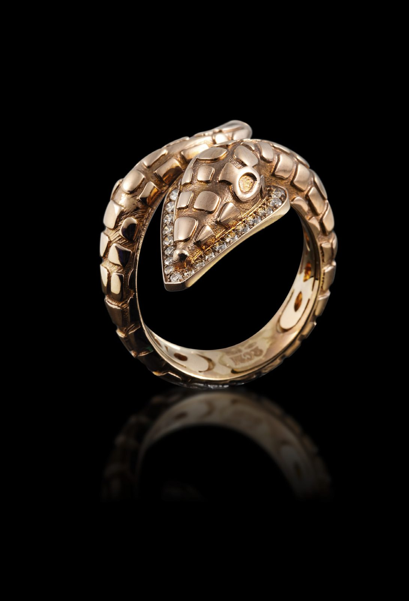

Belle Époque
Antique Serpent Ring
Antique 18kt rose gold and diamond serpent ring. Circa 1900.
- Date & origin
- c. 1900
- Era
- Belle Époque · c. 1900 – 1915
- Category
- Rings
- Price
- Price on request
Condition report available on request · Insured, tracked worldwide shipping